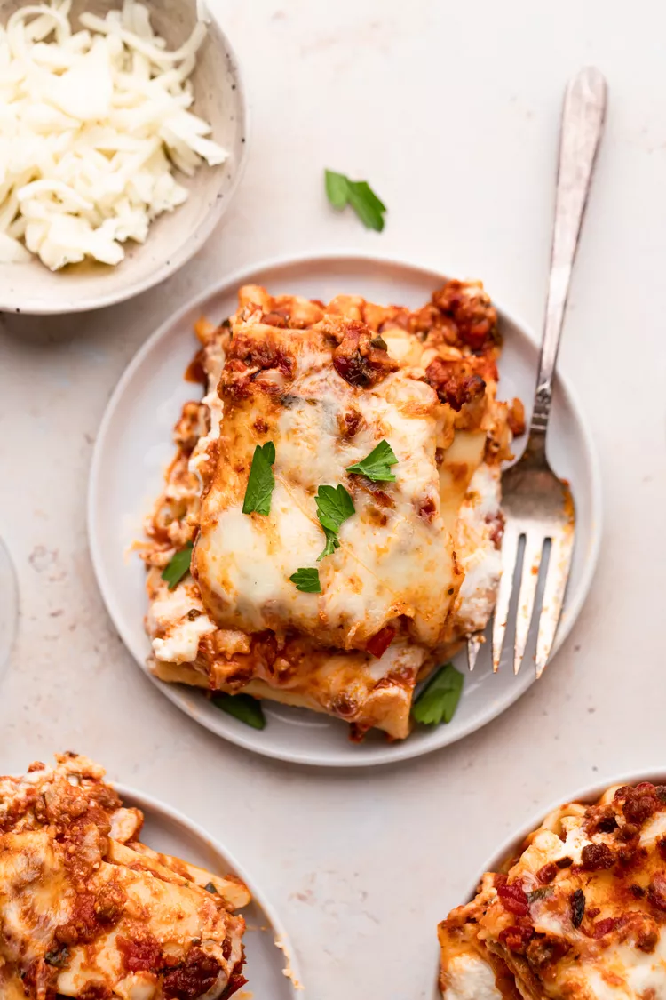

Lasagna

Everyone loves a good lasagna, right? It's a great way to feed a crowd and a perfect dish to bring to a potluck. It freezes well. It reheats well. Leftovers will keep you happy for days.
Simply Recipes reader Alton Hoover sent me his favorite recipe for lasagna which he has been cooking since his college days. Alton's original recipe created enough lasagna for a small army so I halved it. What is posted here will easily serve eight people.
The Secret Behind This Classic Lasagna Recipe
From what I can tell, the secret behind Alton's lasagna is the addition of a little sugar to the sauce and using a bit more cheese than most other recipes.
There are a few minor tweaks to his original recipe that I found necessary, for example adding a dash of wine vinegar to the sauce and changing the amount of Parmesan cheese.

How to make lasagna
- Start by making the sauce with ground beef, bell peppers, onions, and a combo of tomato sauce, tomato paste, and crushed tomatoes. The three kinds of tomatoes gives the sauce great depth of flavor.
- Let this simmer while you boil the noodles and get the cheeses ready. We're using ricotta, shredded mozzarella, and parmesan -- like the mix of tomatoes, this 3-cheese blend gives the lasagna great flavor!
- From there, it's just an assembly job. A cup of meat sauce, a layer of noodles, more sauce, followed by a layer of cheese. Repeat until you have three layers and have used up all the ingredients.
- Bake until bubbly and you're ready to eat!
How to Store and Reheat Leftovers
Half the pleasure of making a lasagna is enjoying the leftovers! The lasagna will keep in the fridge for at least 5 days. Reheat individual slices in the microwave, or warm the whole casserole (covered with foil) in the oven at 350°F until bubbly again.

How to Freeze and Reheat Lasagna
You can also freeze the lasagna either baked or unbaked.
- To freeze an unbaked lasagna: Line the pan with foil before assembling, then assemble the lasagna as directly. Let cool completely, and then freeze until solid. Once frozen, lift the frozen lasagna block from the casserole dish, wrap it in more foil, then freeze for up to a month.
- To reheat an unbaked frozen lasagna: Remove the lasagna from the freezer and unwrap all the layers of foil. Transfer to the original casserole dish, cover, and let it thaw in the fridge overnight. Once thawed, bake as directed.
- To freeze baked lasagna: Line the pan with foil before assembling, then assemble and bake as directed. Let it cool completely, then freeze until solid. Once frozen, lift the frozen lasagna block from the casserole dish, wrap it in more foil, then freeze for up to a month.
- To reheat a baked lasagna: Remove the lasagna from the freezer and unwrap all the layers of foil. Transfer to the original casserole dish, cover, and let it thaw in the fridge overnight. Once thawed, warm the whole casserole (covered with foil) in the oven at 350°F until bubbly again.
- To freeze and reheat individual slices: Cut the baked and cooled casserole into slices and wrap each slice individually in foil. Combine them in a freezer storage bag and freeze for up to 1 month. Thaw overnight in the fridge. To reheat, unwrap from the foil, place on a microwave-safe dish, and reheat in the microwave for a few minutes until bubbly.
READ MORE: How to Freeze Lasagna and Other Casseroles